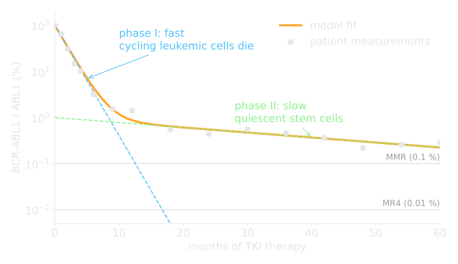
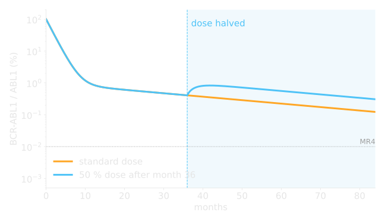
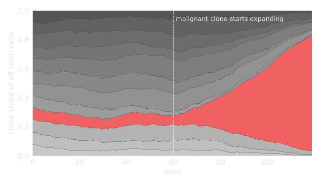

Christoph Baldow
computer scientist · cancer modeller · BI data scientist · Head of AI
One red thread: turning data into models, and models into decisions.
Computer Science @ TU Dresden
Theoretical Computer Science
- logic, automata, complexity
- what can be computed, and how expensive is it?
- the reason I still think in "models" first
Artificial Intelligence
- search, planning, knowledge representation
- machine learning before it was cool
- neural networks were a niche topic back then
Bioinformatics
- sequences, networks, noisy measurements
- first contact with real, messy data
- the bridge to medicine
Mathematical models of blood cancer
Institute for Medical Informatics and Biometry (IMB), Faculty of Medicine Carl Gustav Carus, TU Dresden
A patient is a time series.
Can we predict how it continues, and change it?
Chronic Myeloid Leukemia (CML) in 60 seconds
The disease
- a single genetic accident in a blood stem cell: the BCR-ABL1 fusion gene ("Philadelphia chromosome")
- the cell and all its offspring divide without brakes
- untreated: fatal within a few years
The therapy
- tyrosine kinase inhibitors (TKI), e.g. imatinib: one pill a day
- turned a deadly cancer into a chronic condition
- but: lifelong? side effects, costs (> 30k € per patient and year)
The data
- every 3 months a blood sample: BCR-ABL1 / ABL1 ratio (qPCR)
- a number that spans 5 orders of magnitude, so always on a log scale
- clinical trials: hundreds of such time series
What the data looks like

Two slopes = two cell populations. Fast: dividing cells, killed by TKI. Slow: dormant stem cells that TKI cannot reach.
The model: three boxes, a few rates
Ordinary differential equations, e.g. for the dividing cells:
\[ \frac{dY}{dt} = p_{xy}X - p_{yx}Y + p_y Y - \underbrace{e_{\text{TKI}}\,Y}_{\text{therapy}} - \underbrace{m\,Z\,Y}_{\text{immune}} \]
Fit the rates to each patient's time series → a personal "digital twin" of the disease.
Then simulate: what if we change the dose?
Result 1: half the dose is enough for most patients

Prediction for two phase III trials: ~90 % (IRIS) / ~81 % (CML-IV) of patients in stable remission can halve the dose without losing long-term efficacy.
Result 2: when can we stop therapy completely?
Add the immune system to the model, fit it to patients who stopped TKI. Three classes emerge:
Class A: no control
- leukemia returns after stopping
- must stay on therapy
Class B: strong control
- immune system keeps the residual cells in check
- treatment-free remission
Class C: it depends
- control is fragile, timing matters
- stepwise dose reduction before stopping helps
DESTINY trial (67 patients): stepping down to 50 % and then 25 % before stopping keeps the success rate with only 58 % of the drug.
Side quest: spotting a cancer before it is one

Blood is made by thousands of stem cell clones. In gene therapy every clone carries a barcode, so we can watch them.
Classic diversity measures (Shannon, Simpson) react late. We proposed a measure for relative clonal expansion that flags a run-away clone early.
Later: reconstruct clones from noisy barcode readouts (R package MultIS, Nat Commun 2022).
A model nobody can run is worthless
So I built MAGPIE: a web platform where clinicians and researchers run computational models with one click, with versioning and reproducible results.
1. publish
- upload model code + parameter form
2. run
- isolated container per job
3. share
- every result has a hash, every run is reproducible
What I took with me (and why you will meet it again)
Data first
- most time goes into cleaning, joining, versioning
- → Databases, Data Management
Uncertainty is the product
- a prediction without a confidence interval is a guess
- → Statistics, A/B testing
Models for decisions
- the question "what if?" is what makes a model useful
- → Introduction to AI
Make it usable
- a dashboard beats a PDF, an API beats a dashboard
- → BI, Tools, Agents
Selected publications
| 2022 | Karg, Baldow, Zerjatke, Clark, Roeder, Fassoni, Glauche. Modelling of immune response in CML patients suggests potential for treatment reduction prior to cessation. Front Oncol |
| 2022 | Wagner, Baldow, Calabria, Rudilosso, Gallina, Montini, Cesana, Glauche. Clonal reconstruction from co-occurrence of vector integration sites accurately quantifies expanding clones in vivo. Nat Commun |
| 2021 | Hoffmann, Baldow, et al. How to predict relapse in leukemia using time series data: a comparative in silico study. PLoS ONE |
| 2020 | Hähnel, Baldow, Guilhot, Guilhot, Saussele, Mustjoki, et al. Model-based inference and classification of immunologic control mechanisms from TKI cessation and dose reduction in patients with CML. Cancer Res |
| 2020 | Hoffmann, Cazemier, Baldow, et al. Integration of mathematical model predictions into routine workflows to support clinical decision making in haematology. BMC Med Inform Decis Mak |
| 2018 | Glauche, Kuhn, Baldow, et al. Quantitative prediction of long-term molecular response in TKI-treated CML: lessons from an imatinib versus dasatinib comparison. Sci Rep |
| 2018 | Fassoni, Baldow, Roeder, Glauche. Reduced tyrosine kinase inhibitor dose is predicted to be as effective as standard dose in CML. Haematologica |
| 2017 | Baldow, Salentin, Schroeder, Roeder, Glauche. MAGPIE: simplifying access and execution of computational models in the life sciences. PLoS Comput Biol |
| 2017 | Proschmann, Baldow, et al. Response dynamics of pediatric patients with CML on imatinib therapy. Haematologica |
| 2016 | Baldow, Thielecke, Glauche. Model based analysis of clonal developments allows for early detection of monoclonal conversion and leukemia. PLoS ONE |
Data Scientist @ Dataqube GmbH
From patients to customers: same maths, different questions.
Business Intelligence
- data warehouses, ETL pipelines, data models
- from "we have data" to "we know what happened"
Dashboards & KPIs
- the right number for the right person at the right time
- most dashboards fail at the "right question" step
Advanced analytics
- forecasting, segmentation, experiments
- when a KPI is not enough and a model is needed
Head of AI @ atroo GmbH
LLMs & agents in products
- from demo to something a customer relies on
- retrieval, tools, evaluation, guardrails
Data & AI strategy
- which problems deserve AI, which deserve a SQL query
- build vs. buy, cost, risk
Team & craft
- engineers, data people, and domain experts in one loop
- the job this course prepares you for
Why this course looks the way it does
| where I needed it | what we do here |
| clinical trial data, barcodes, MAGPIE | (III) Database Architecture, (IV) Data Management |
| log-scale time series, model fits, "is the difference real?" | (II) Python & Pandas, Statistics & A/B testing |
| dashboards and KPIs at Dataqube | (I) Business Intelligence |
| digital twins, predictions, agents at atroo | (V) Introduction to AI, (VI) Generative AI & Agents |
"You will never ever use Excel again." (well, almost)
Expectations
What you can expect from me
- theory only as much as needed, then hands-on in Python
- real examples, with the "why do I need this in my job" attached
- honest answers, including "I don't know, let's find out"
- all material open on GitHub, also after the course
What I expect from you
- laptop, Google account for Colab, curiosity
- ask questions early, there are no stupid ones
- work in groups, present your work
- use AI tools, but be able to explain every line you hand in
Your turn
Name, background, and one thing you want to be able to do after this course.